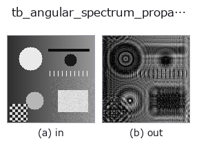

typed op• Data kinds: cimage → cimage
• Call: fullseye.apply(img, "tb_angular_spectrum_propagate", a=0.5, b=0.5) (2-D model = एक image + दो scalar knobs a,b∈[0,1])

*Figure synthetic 128×128 input पर सच में चलाकर मिला output है। बाईं ओर input, दाईं ओर output। Point clouds ऊपर से देखे गए scatter के रूप में (brightness = z), 1-D series line के रूप में, volumes z दिशा में maximum-intensity projection के रूप में, videos बीच के frame के रूप में, complex images amplitude के रूप में, और जो return values चित्र नहीं बन सकते वे स्वयं values के रूप में दिखाए जाते हैं।*
Knob a को बदलकर (0.1 / 0.5 / 0.9, दूसरा knob default पर):
▸ tb_angular_spectrum_propagate: knob a को बदलने का figure (docs site)
Knob b को बदलकर (0.1 / 0.5 / 0.9, दूसरा knob default पर):
▸ tb_angular_spectrum_propagate: knob b को बदलने का figure (docs site)
Stages (पहले आने वाले ops → यह op, बाएँ से क्रम में):
▸ tb_angular_spectrum_propagate: stages का figure (docs site)
दूसरी images पर भी (synthetic scene / photo / coins। ऊपर की row में inputs, नीचे की row में उनके outputs। Knobs default पर):
▸ tb_angular_spectrum_propagate: दूसरी images पर output (docs site)
complex field का exact scalar free-space propagation (angular spectrum)।
> नीचे का विस्तृत विवरण मूल text में है — सारांश और headings का अनुवाद हो चुका है।
U(z) = IFFT{ FFT{U(0)} * exp(i*2*pi*z*sqrt(1/lambda^2 - fx^2 - fy^2)) } in the exp(-i*omega*t) convention, so a positive *distance_um* propagates forward. Components beyond the propagating cone (fx^2 + fy^2 > 1/lambda^2) are attenuated by exp(-2*pi*|z|*sqrt(fx^2 + fy^2 - 1/lambda^2)), which is the physical evanescent decay — not zeroed, so distance_um = 0 is an *exact* identity and the transfer function is continuous through it.
Unlike Fresnel propagation this makes no paraxial approximation: it is the exact solution of the Helmholtz equation for a band-limited field, valid from a fraction of a wavelength outward.
Returns a complex128 array with the same shape as *field*.
Ground truth it reproduces (measured): distance_um = 0 returns the field bit-identically (it short-circuits the transform pair); propagating +z then -z returns the original to a relative L2 error of 4.3e-16 to 5.3e-16 for a band-limited field (measured on three: 64x64 random at +/-50 um, a 64x64 Gaussian at +/-250 um, a 128x128 random at +/-500 um); total power is conserved to between 0 and 3.5e-16 relative on the same three. A field *with* evanescent content does not round-trip — those components are gone by construction, in both directions, because that is what physically happens.
*field* is a field in the space domain, not a spectrum: do not hand it the fftshifted output of complexops.cx_fft. Real input is promoted to complex, which loses nothing.
Aliasing: the discrete transfer function is periodic, so a field that diffracts past the array edge wraps around. The practical guard is the usual one — pad the field so the propagated support stays inside, and keep pixel_pitch_um below lambda/(2*NA). No warning can detect this reliably from the array alone, so none is invented.
Raises ValueError: *field* is not 2-D, smaller than 2x2, larger than MAX_FIELD_ELEMENTS, masked, or non-finite; non-positive or non-finite *wavelength_um* / *pixel_pitch_um*; non-finite *distance_um*.
Typed bridge of the optics op angular_spectrum_propagate into the 2-D evolution registry: the same implementation, called under the op(v, a, b) convention. a drives wavelength_um (default 0.55) and b drives distance_um (default 100).
• Sample data catalog (DL URL / license) — 2-D के लिए skimage.data (BSD/public) + synthetic, 3-D के लिए real data sources (Stanford/PDS आदि) के DL URL।
• Operators का स्रोत और संदर्भ — इस op family के मूल research/methods के स्रोत।
नीचे का program सच में चलता है, यह जाँचा गया है (figure वाला ही input)। Studio की help में यह block buttons बन जाता है, जिनसे इसे वहीं load करके चलाया जा सकता है।
img_to_cimage 0.50 0.50 tb_angular_spectrum_propagate 0.50 0.50
▸ यह pipeline load करें · Load करके चलाएँ
नीचे के उदाहरण मूल ledger op angular_spectrum_propagate को call करते हैं। यह bridge op वही implementation है, बस fn(v, a, b) convention के अनुसार ढाला गया है, इसलिए व्यवहार वैसा ही लागू होता है (केवल call का रूप अलग है)।
• optics_imaging — py -3.11 examples/optics_imaging.py
cimage को input के रूप में लेते हैं)identity · tb_cx_ifft · tb_cx_magnitude · tb_cx_phase · tb_cx_real · tb_cx_imag · tb_cx_log_magnitude · tb_cx_apply_transfer_function
typed)tb_points_to_voxel · tb_estimate_point_normals · tb_iss_keypoints · tb_project_points · tb_render_point_depth · tb_statistical_outlier_removal · tb_radius_outlier_removal · tb_voxel_grid_downsample
*Provenance: ops.py — 2D operator registry. यह per-op note tools/opdocs.py md से अपने-आप generate होता है (हाथ से edit न करें)।*
© 2026 Kazufumi Furuse — Fullseye operator documentation. Licensed under Apache-2.0.